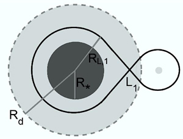
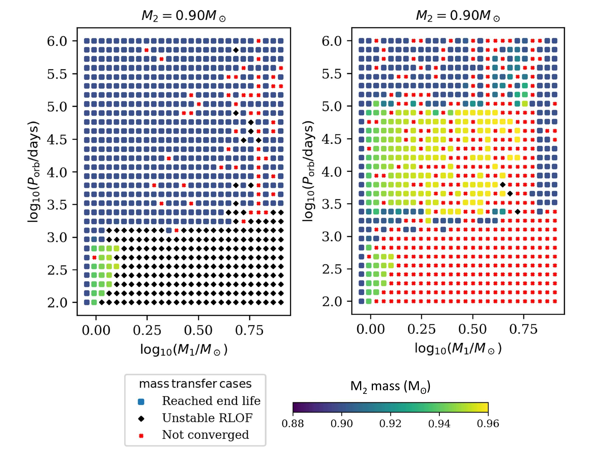
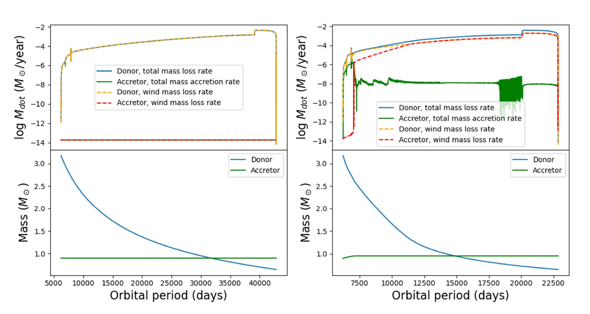
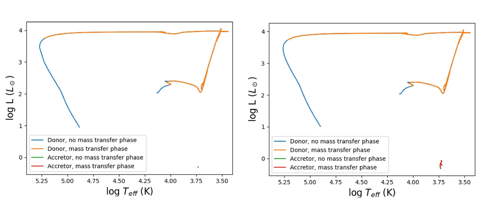

Hello! I am Sasha Levina and I am a rising senior at Haverford College. I am studying Astrophysics with a concentration in Scientific Computing. At my home institution, I study the Crab pulsar using X-ray data from NICER with Dr. Andrea Lommen. This summer, I have been working in the group of Dr.Vicky Kalogera on studying mass transfer in low-mass binary systems and expanding the capabilities of the binary simulation codes MESA and POSYDON. My primary research interests are gravitational waves, black holes, and pulsars. I particularly enjoy computational astrophysics, and also like working with observational data. I plan to continue research and intend to pursue a PhD in Astronomy.
Binary systems are systems of two stars which orbit around each other and influence each other's evolution through processes such as mass transfer, where material can be transferred from one star (the donor, or the primary) to the other (the accretor, or secondary) star. The ultimate fate of a star is determined by its mass, with lower mass stars (like the Sun) becoming a white dwarf, higher mass stars becoming a neutron star, and extremely high mass stars becoming a black hole. Therefore, mass transfer between the stars in a binary system can have a significant impact on the evolution of the stars (Sana et al. 2012, De Marco & Izzard 2017).
One standard method of mass transfer is Roche-lobe overflow (RLO), where the donor expands to fill its Roche lobe radius $R_{\text{L,1}}$, or the region around each star in a binary where material remains gravitationally confined to that star. If a star fills its Roche lobe, material will be transferred to the other star. This process may be stable, caused by the nuclear evolution of the donor, or unstable, where the runaway mass transfer occurs and a ring of material forms around the binary system (a common envelope) (Pols 2012). Another method is wind mass transfer, where some of the material which escapes from the donor by stellar wind is captured by the accretor (Bondi & Hoyle 1944).
Wind Roche-Lobe Overflow (WRLOF) is a mechanism of mass transfer in which the stellar wind of the donor is contained within the wind acceleration zone radius $R_{\text{d}}$, as shown in Figure 1 below. When the wind acceleration zone fills the Roche lobe ($R_{\text{d}} \geq R_{\text{L,1}}$), the wind becomes focused in the direction of the secondary star, and mass is accreted onto the secondary (Mohamed & Podsiadlowski 2007). This occurs in the case of slow and dense winds, which are characteristic of asymptotic giant branch (AGB) stars (Abate et al. 2013).

Figure 1: A diagram showing the donor star (radius $R_*$), the Roche lobe (radius $R_{\text{L,1}}$), and the wind acceleration zone (radius $R_\text{d}$). The figure is from Abate et al. (2013).
Abate et al. (2013) showed that the implementation of WRLOF mass transfer in a binary system consisting of an AGB primary and a low-mass main sequence secondary is able to account for the discrepancy between the observed population of carbon-enhanced metal-poor (CEMP) stars and the predictions of standard stellar models that do not reproduce the observed percentage of CEMP stars, which makes up 9-25% of very metal-poor stars (Beers et al. 1992, Christlieb et al. 2001, Beers et al. 1992, Izzard et al. 2009, Komiya et al. 2007). CEMP stars are found in the Galactic halo and have an abundance of s-process elements (Aoki et al. 2007). S-process elements are formed in AGB stars and the helium shell burns into carbon, so mass transfer from an AGB star could explain the composition of CEMP stars (Lucatello et al. 2005). Abate et al. (2013) found that WRLOF allows systems with higher initial orbital periods and lower secondary masses to become progenitors of CEMP stars.
We used the MESA binary module to evolve two stars simultaneously in a binary system. MESA performs 1-dimensional simulations of stars, including rotation, mass transfer, loss of mass and angular momentum, among other characteristics and evolutionary processes present in a binary system (Paxton et al. 2015).
In order to evolve a binary, we first initiate two individual zero-age main sequence (ZAMS) stars of some specified mass and metallicity, then place them in a binary system by setting the initial orbital period assuming a circular orbit, and then evolve simultaneously until a termination condition is met. Termination conditions include: a star's age exceeds 13.8 Gyr, a star evolves into a white dwarf (WD) or reaches end of core C-burning, a common envelope (CE) forms around the binary, or a star enters the thermally-pulsating asymptotic giant branch (TP-ABG) phase (Fragos et al. 2022).
We use POSYDON to run a grid of MESA binaries with a range of initial donor and accretor masses and orbital periods. We use a 30x10x30 grid of $M_1, M_2, P_{\text{orbital}}$, respectively, where $M_1$ ranges $[0.7,8.0] M_\odot$, $M_2$ ranges $[0.1,0.9] M_\odot$, and $P_{\text{orbital}}$ ranges $[10^2,10^6]$ days. We assumed solar metallicity. To implement WRLOF in the AGB phase, the radius of the wind acceleration zone is defined as $$R_{\text{d}} = \frac{1}{2} R_{*} \left(\frac{T_{\text{eff}}}{T_{\text{cond}}}\right)^{2.5},$$ where $T_{\text{eff}}$ is its effective temperature and $T_{\text{cond}}$ is the condensation temperature of the dust in the wind, where $T_{\text{cond}}=1500$ K for carbon-rich dust and $T_{\text{cond}}=1000$ K for oxygen-rich dust.
We model the WRLOF accretion efficiency using the results of Abate et al. (2013), which is the ratio between the mass accreted and the mass lost from the system, where $c_1 = -0.284$, $c_2 = 0.918$, and $c_3 = -0.234$. Adhering to their methods, we implement a dependency on the mass-ratio $q=M_2/M_1$ and set a limit on $ \beta_{\text{acc}}$ where $\beta_{\text{acc,max}} = 0.5$ according to calculations by Mohamed et al. (2010). Defining $x=R_\text{d}/R_{\text{L,1}}$, this gives: $$\beta_{\text{acc}} = \min\left\{\frac{25}{9} q^2 \left[c_1 x^2 + c_2 x + c_3\right], \beta_{\text{acc,max}}\right\}.$$
A comparison between the final accretor mass for a slice of the grid at constant initial $M_2 = 0.9 M_\odot$ is shown in Figure 2, for a grid without (left) and with (right) WRLOF. The left panel shows that without the implementation of WRLOF, the mass of the accretor remains approximately constant and RLO mass transfer only occurred in systems with initial $M_1 \lesssim 1.5 M_\odot$ and $P_{\text{orbital}} \lesssim 1000$ days. The right panel demonstrates that when WRLOF is applied, the accretor gained approximately $\sim0.05 M_\odot$ through wind accretion in systems with initial $M_1 \lesssim 5.6 M_\odot$ and $1500 \lesssim P_{\text{orbital}} \lesssim 10^5$ days. The amount of mass accreted increased with initial $M_1$.
Figure 2: A comparison of a slice the POSYDON grid of MESA binaries without WRLOF (left) and with WRLOF (right), with initial $M_2=0.9 M_\odot$. The axes range over initial $M_1 = [0.7,8.0] M_\odot$ and initial $P_{\text{orbital}}=[10^2,10^6]$ days. The marker shape indicates the termination condition for each binary, and the color corresponds to the final $M_2$ mass.
Figure 3: A comparison of the mass accretion rate in $M_\odot$/year (top) and the star masses in $M_\odot$ (bottom) plotted against the orbital period in days, for for $M_1 = 3.2 M_\odot$, $M_2 = 0.9 M_\odot$ and $P_{\text{orbital}} = 6200$ days. The left plot uses standard mass transfer and the right plot uses WRLOF.
Comparisons of individual binaries with identical initial parameters indicate that WRLOF causes the mass of the accretor to increase, which results in strong winds around the accretor, when the accretor expands as it begins to evolve, and so is unable to gravitationally retain the material at its surface which escapes as wind. In the example of initial $M_1 = 3.2 M_\odot, M_2= 0.9 M_\odot$, and $P_{\text{orbital}} = 6200$ days, we observed an increase in the mass accretion rate of the accretor due to wind which indicates that the accretor began to evolve off the main sequence, shown in Figure 3. The HR diagrams in Figure 4 also show that the mass gained by the accretor due to WRLOF causes the star to start evolving off the main sequence whereas without WRLOF, the star remains on the main sequence.
Figure 4: A comparison of the HR diagram for $M_1 = 3.2 M_\odot$, $M_2 = 0.9 M_\odot$ and $P_{\text{orbital}} = 6200$ days without WRLOF (left) and with WRLOF (right), with mass transfer indicated. In the HR diagram with WRLOF, the accretor star begins evolving off the main sequence.
We found that the application of WRLOF to low-mass binary systems causes the accretor to gain sufficient mass to evolve off the main sequence earlier than without WRLOF. The mass loss rate of the accretor is enhanced because it evolves off the main-sequence evolution after gaining mass from the donor's wind. As these may affect the evolution of the binary system, WRLOF should be accounted for when modeling binary populations in this mass range.
To address the not-converged runs that are present in the WRLOF grid, we will rerun the not-converged binaries with modified POSYDON defaults. We will gradually lower the mass loss rate at which a binary is marked as unstable to a level that is more appropriate for lower mass stars and then turn off hydrogen flashes in the WD cooling stage to address any remaining not-converged binaries, as some of the models crash in the WD hydrogen flash phase. Skipping this process will not impact our result.
In order to conduct a more direct comparison with the results of Abate et al. (2013), we will then repeat the grids with $Z=0.01 Z_\odot$ to match the metal-poor condition for CEMP stars. We will also investigate the effects of allowing the donor star to accrete mass from the wind of the accretor star.
The additional grids will allow us to more accurately explore the parameter space which has the potential to produce CEMP stars. We will compare our results to the conclusions of Abate et al. (2013), which will provide a better understanding of the discrepancy between the observed population of CEMP stars and the population predicted by models with detailed binary evolution.
References
Abate, C., Pols, O. R., Izzard, R. G., Mohamed, S.S., & deMink, S. E. 2013, A&A, 552, A26
Aoki, W., Beers, T. C., Christlieb, N., et al. 2007, ApJ, 655, 492
Beers, T. C., Preston, G. W., & Shectman, S. A. 1992, AJ,103, 1987
Bondi, H., & Hoyle, F. 1944, MNRAS, 104, 273
Christlieb, N., Green, P. J., Wisotzki, L., & Reimers, D.2001, A&A, 375, 366
De Marco, O., & Izzard, R. G. 2017, PASA, 34, e001
Fragos, T., Andrews, J. J., Bavera, S. S., et al. 2022, arXiv e-prints, arXiv:2202.05892
Hofner, S. 2007, in Astronomical Society of the PacificConference Series, Vol. 378, Why Galaxies Care About AGB Stars: Their Importance as Actors and Probes, ed.F. Kerschbaum, C. Charbonnel, & R. F. Wing, 145
Izzard, R. G., Glebbeek, E., Stancliffe, R. J., & Pols, O. R.2009, A&A, 508, 1359
Komiya, Y., Suda, T., Minaguchi, H., et al. 2007, ApJ, 658,367
Lucatello, S., Gratton, R. G., Beers, T. C., & Carretta, E.2005a, ApJ, 625, 833
Lucatello, S., Tsangarides, S., Beers, T. C., et al. 2005, ApJ, 625, 825
Mohamed, S., & Podsiadlowski, P. 2007, in Astronomical
Society of the Pacific Conference Series, Vol. 372, 15th European Workshop on White Dwarfs, ed. R. Napiwotzki& M. R. Burleigh, 397
Mohamed, S. S. 2010, PhD Thesis, St Edmund Hall, University of Oxford
Paxton, B., Bildsten, L., Dotter, A., et al. 2011, ApJS, 192,3
Paxton, B., Cantiello, M., Arras, P., et al. 2013, ApJS, 208,4
Paxton, B., Marchant, P., Schwab, J., et al. 2015, ApJS,220, 15
Paxton, B., Schwab, J., Bauer, E. B., et al. 2018, ApJS,234, 34
Paxton, B., Smolec, R., Schwab, J., et al. 2019, ApJS, 243,10
Pols, O. 2012, Binary Stars: Binaries and Stellar Evolution, https://www.astro.ru.nl/~onnop/education/binaries utrecht notes/Binaries ch6-8.pdf, accessed: 2022-26-07
Sana, H., de Mink, S. E., de Koter, A., et al. 2012, Science,337, 444